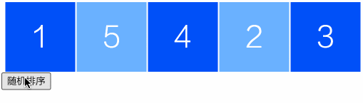
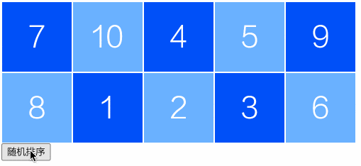
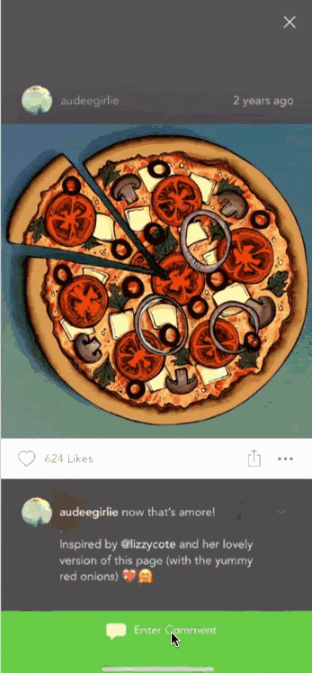

2024-06-16 15:21:50 · YinHao
有一种能够快速实现复杂动画交互的动画思维 FLIP，为了介绍这个动画思维，我准备了三个案例，大家可以在上面的视频中观看。
FLIP 是四个单词的首字母，First、Last、Invert、Play，这四个单词给我们提供了完成动画的具体思路。
First 表示元素初始时的具体信息，在 html 环境中，这个事情是比较容易就能做到的，我们可以利用 getBoundingClientRect 或者 getComputedStyle 来拿到元素的初始信息
Last 表示元素结束时的位置信息。此时我们可以直接改变元素的位置，把元素放到新的节点上去。这样我们就可以直接使用同样的方式拿到结束时的元素具体信息
Invert 表示倒置。虽然元素到了结束时的节点位置，但是视觉上我们并没有看到，此时要设计让元素动画从 First 通过动画的方式变换到 Last，刚好我们又记录了动画的开始和结束信息，因此我们可以利用自己熟悉的动画方式来完成 Invert
Play 表示动画开始执行。在代码上通常 Invert 表示传参，Play 表示具体的动画执行。
接下来我们使用三个案例来进一步学习这个动画思想。
案例效果如图所示。
案例的 html 结构如下
<div id="container">
<div class="item">1</div>
<div class="item">2</div>
<div class="item">3</div>
<div class="item">4</div>
<div class="item">5</div>
</div>
<button id="sort">随机排序</button>
先获取两个关键 DOM 对象
const container = document.getElementById("container");
const sortBtn = document.getElementById("sort");
First，记录元素初始位置信息。此时我们把开始的 X 位置信息保存在子节点对象上，我们也可以单独另起一个数组来保存所有子节点的具体信息。
// 记录开始位置信息
function record(container) {
const all = [...container.children];
all.forEach((item, i) => {
const rect = item.getBoundingClientRect();
item.startX = rect.left;
});
}
Last，直接改变元素的节点位置。因为改变之后，元素在新的节点上，那么我们这里就可以单独快捷获取元素改变之后的位置信息，所以可以封装一个方法，只改变元素的节点位置信息，而在需要的时候获取 Last 即可。
当然也可以单独在这一步把属性位置信息保存起来
function change() {
const all = [...container.children];
const len = all.length;
all.forEach((item, i) => {
const newIndex = Math.floor(Math.random() * len);
if (newIndex !== i) {
const nextDOM = item.nextElementSibling;
container.insertBefore(item, all[newIndex]);
container.insertBefore(all[newIndex], nextDOM);
}
});
}
Invert 和 play 在代码实现上往往会耦合在一起，Invert 表示参数传入，play 表示动画执行。因此我们可以最后再定义一个方法 play 表示动画的执行
function play(container) {
const all = [...container.children];
const len = all.length;
all.forEach((item, i) => {
const rect = item.getBoundingClientRect();
const currentX = rect.left;
item.animate(
[
{ transform: `translateX(${item.startX - currentX}px)` },
{ transform: "translateX(0px)" },
],
{ duration: 600 }
);
});
}
这里我使用了一个 DOM 元素自带的 animate 方法，来完成动画的实现，该方法目前还是一个实验性的 api，在 2022 年提出，目前最新版的 chrome 浏览器已经支持。
该动画接口使用起来也比较简单，跟 keyframes 类似。
animate(keyframes, options);
keyframes 表示关键帧数组，options 表示动画持续时间，或者包含多个时间属性，用于配置动画函数或者 iterations、delay 等常见属性，与 css 的动画属性基本保持一致。
你也可以自己封装一个类似的方法，或者使用成熟的第三方工具库，能达到类似效果的方式也比较多
然后在点击按钮时，执行即可
sortBtn.onclick = () => {
record(container);
change();
play(container);
};
案例效果展示如图
元素多属性动画并不会增加多少实现复杂度，只是多记录几个元素而已。这个案例包含了 x/y/backgroundColor 三个属性
First，记录初始信息
// 记录开始位置信息
function record(container) {
const all = [...container.children];
all.forEach((item, i) => {
const rect = item.getBoundingClientRect();
item.startX = rect.left;
item.startY = rect.top;
item.bgColor = getComputedStyle(item)["backgroundColor"];
});
}
Last，直接改变元素节点位置
因为改变节点位置之后，能够轻易获取到元素新的位置的具体属性，所以这一步可以称之为
Last
function change() {
const all = [...container.children];
const len = all.length;
all.forEach((item, i) => {
const newIndex = Math.floor(Math.random() * len);
if (newIndex !== i) {
const nextDOM = item.nextElementSibling;
container.insertBefore(item, all[newIndex]);
container.insertBefore(all[newIndex], nextDOM);
}
});
}
Invert and Play
function play(container) {
const all = [...container.children];
const len = all.length;
all.forEach((item, i) => {
const rect = item.getBoundingClientRect();
const currentX = rect.left;
const currentY = rect.top;
const bgColor = getComputedStyle(item, false)["backgroundColor"];
item.animate(
[
{
transform: `translate(${item.startX - currentX}px, ${
item.startY - currentY
}px)`,
backgroundColor: item.bgColor,
},
{ transform: "translate(0px, 0px)", backgroundColor: bgColor },
],
{ duration: 600 }
);
});
}
最后，点击执行
sortBtn.onclick = () => {
record(container);
change();
play(container);
};
上面那两个案例，在实践中基本上没什么用，主要用于辅助学习。因此大家可能对于高级感和优雅感的体会不是那么深刻。
第三个案例则以在实践中，在前端很少有项目能够做到的共享元素动画，来为大家介绍这种动画思想方案的厉害之处。
共享元素动画在前端是一个很少被提及的概念，但是在客户端的开发中，却已经运用非常广泛。
对于前端而言，这代表了未来页面交互的主要发展方向。例如在小红书的 web 端已经实现了该功能
在 FLIP 的指导思想下，该功能实现起来也并不复杂。
First，记录元素的初始信息
const all = [...list.children];
// 记录开始位置信息
all.forEach((item, i) => {
const rect = item.getBoundingClientRect();
item.startX = rect.left;
item.startY = rect.top;
item.width = rect.width;
item.height = rect.height;
});
当我们点击元素时，此时有两个元素位置信息在发生变化，一个是背景弹窗。他的变化比较简单，就是透明度的变化，因此我们不用记录他的信息。另外一个就是共享的元素 item，此时我们记录了四个信息：startX、startY、width、height
Last，点击元素之后，出现弹窗。此时我们把相关的两个节点插入到正确的位置上即可。
function change(element) {
current = element.cloneNode(true);
modal = document.createElement("div");
modal.id = "modal";
modal.appendChild(current);
document.body.appendChild(modal);
}
Invert and Play. 也是比较简单，就是获取新节点的位置，然后设置动画即可
function play(preItem) {
modal.animate(
[
{ backgroundColor: `rgba(0, 0, 0, 0)` },
{ backgroundColor: `rgba(0, 0, 0, ${0.3})` },
],
{ duration: 600 }
);
const rect = current.getBoundingClientRect();
const currentX = rect.left;
const currentY = rect.top;
const width = rect.width;
const height = rect.height;
const x = preItem.startX - currentX - (width - preItem.width) / 2;
const y = preItem.startY - currentY - (height - preItem.height) / 2;
console.log(x, y);
current.animate(
[
{
transform: `translate(${x}px, ${y}px)`,
width: `${preItem.width}px`,
height: `${preItem.height}px`,
},
{
transform: "translate(0px, 0px)",
height: `${height}px`,
width: `${width}px`,
},
],
{ duration: 600 }
);
}
最后给每个元素添加点击事件
all.forEach((item, i) => {
item.onclick = (event) => {
change(event.target);
play(event.target);
};
});
弹窗上也需要新增一个点击事件，用于执行弹窗消失的动画
modal.onclick = () => {
const ani = modal.animate(
[
{ backgroundColor: `rgba(0, 0, 0, ${0.3})` },
{ backgroundColor: `rgba(0, 0, 0, 0)` },
],
{ duration: 600 }
);
const rect = current.getBoundingClientRect();
const currentX = rect.left;
const currentY = rect.top;
const width = rect.width;
const height = rect.height;
const x = element.startX - currentX - (width - element.width) / 2;
const y = element.startY - currentY - 100;
current.animate(
[
{
transform: "translate(0px, 0px)",
height: `${height}px`,
width: `${width}px`,
},
{
transform: `translate(${x}px, ${y}px)`,
width: `${element.width}px`,
height: `${element.height}px`,
},
],
{ duration: 600 }
);
console.log(x, y);
ani.onfinish = () => {
modal.remove();
};
};
并在运动结束之后，删除弹窗节点
ani.onfinish = () => {
modal.remove();
};
一个共享元素动画，就这么简单的实现了。
如果我们要结合路由切换转场来实现共享元素动画，其实实现原理也是一样的，非常的简单，我们只需要在路由切换时，把共享元素的初始位置信息记录下来并作为参数传递给下一个页面即可。
也就是说，我们只需要把这里的两个点击事件，结合路由事件和参数传递，就能做到跟小红书一样的共享元素路由转场效果。